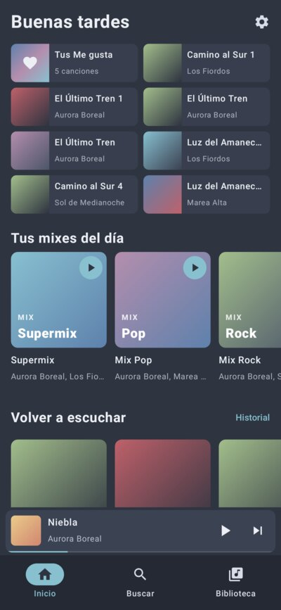
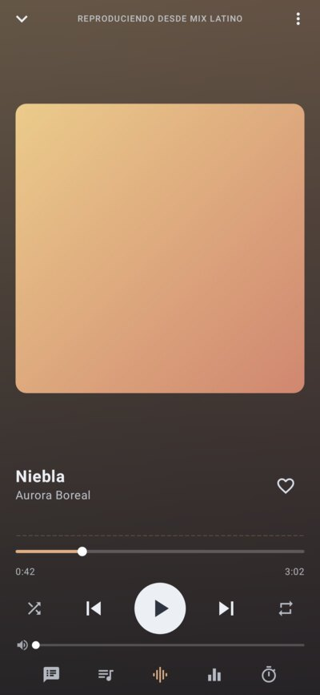
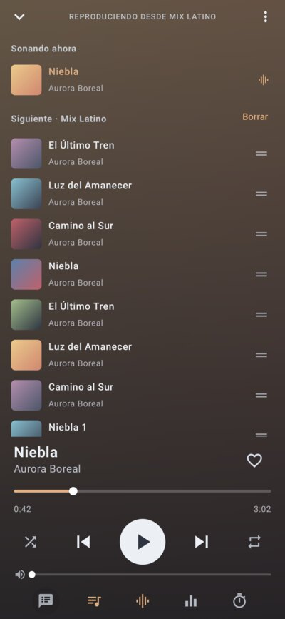
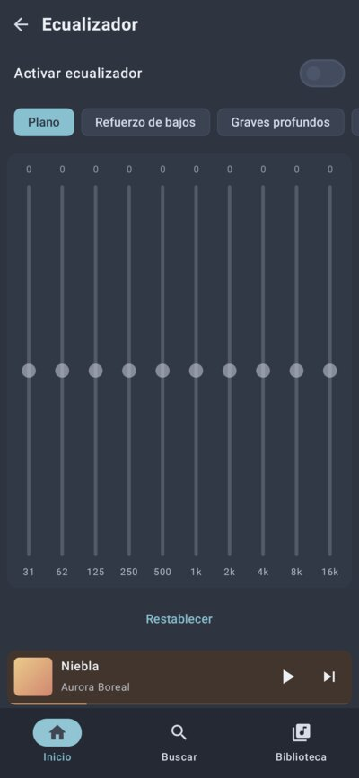

RunicMusic es un reproductor de música local con tema Nord: toca las canciones que ya tienes en el teléfono, con lo mejor de Spotify, YouTube Music y Apple Music. Es la versión de celular del programa de escritorio para Linux. Tus archivos nunca se modifican, y solo se borra una canción si tú lo pides.




Qué trae
| Idea de… | Qué hace |
|---|---|
| Spotify | Inicio con accesos rápidos y mixes del día, cola editable (arrastrar para acomodar, deslizar para quitar), Me gusta y playlists. |
| YouTube Music | Radio a partir de cualquier canción y reproducción automática: al acabar la cola sigue con la más parecida que no haya sonado. |
| Apple Music | Pantalla completa con el color de la carátula, letra grande sincronizada, insignia Lossless y Hi-Res, paso sin silencios entre canciones. |
| Extras | Ecualizador de 10 bandas con presets (Latino, Regional…), visualizador, temporizador para dormir, títulos limpios aunque vengan de YouTube y carátulas mejores de internet. |
Se lleva bien con lo demás
- Sigue sonando con la pantalla apagada, con controles en la notificación, la pantalla de bloqueo y los audífonos.
- Sale en «Abrir con» al tocar una canción en el explorador de archivos o en WhatsApp.
- Lee la carpeta
runicMusicy sus subcarpetas: lo que bajes con Runic Downloader aparece solo. Si quieres, en Ajustes puede buscar en todo el teléfono. - Trae tus Me gusta, playlists e historial desde RunicMusic de la computadora.
- Desde la versión 1.2.0, si quieres, inicia sesión con Google para que tus Me gusta, playlists y canciones eliminadas coincidan entre el teléfono y la computadora, y para seguir en uno lo que escuchabas en el otro. Se guarda en una carpeta privada de tu propio Google Drive.